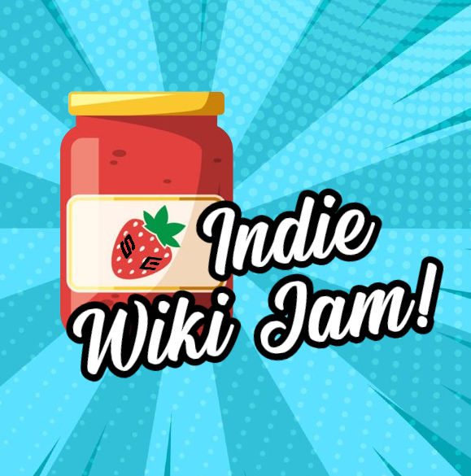

Indie Wiki Jam
Basic Info:
This is a 2-week long editing event to encourage people to edit wikis they haven’t edited before.
Dates:
- Deadline to submit a wiki for the jam: 3th of January, 2024 at 00:00 UTC
- Start of jam: 10th of January at 00:00 UTC
- End of jam: 24th of January at 00:00 UTC
Discord server:
https://discord.gg/RdufJ9WfsX
Interest form:
https://forms.gle/kwEAggzgxAhqAQ7m7
Website:
Indiewikijam.com (to be set up)
Wiki eligibility:
- The wiki must be independently funded, or on a host that respects their self-governance, self-determination and similar factors
- The wiki must have staff of its own (such as being of an admin or bureaucrat role) to watch for vandals
- The wiki has been submitted to the form above
Current list of wikis:
Edit eligibility:
- In order for an edit to count, it needs to fall between the date and times mentioned under “Start of jam” and “End of jam”
- It needs to be tagged as #IWJ
- It needs to be on a wiki the editor hasn’t edited before, and the wiki needs to be an approved wiki
Prizes:
To Be Determined
Supporting groups:
- SEIWA
- IWF
- Grifkuba
- Gaming Wiki Network
Organizers:
- Grifkuba
- KeybladeSpyMaster
- Trig Jegman
Teams:
Team basics:
Judges:
With the exception of the Head Judge, all Judges will have their identity kept confidential.
The Head Judge of the event will be Trig Jegman.
Sponsors:
Notes:
All judges give up the right to submit edits to the Jam